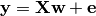

3.1. Decoding on simulated data¶
Objectives
- Understand linear estimators, (SVM, elastic net, ridge)
- Use the scikit-learn’s linear models
3.1.1. Simple NeuroImaging-like simulations¶
We simulate data as in Michel et al 2012, Total variation regularization for fMRI-based prediction of behaviour, Trans Med Imag: a linear model with a random design matrix X:

- w: the weights of the linear model correspond to the predictive brain regions. Here, in the simulations, they form a 3D image with 4 regions in opposite corners.

- X: the design matrix corresponds to the observed fMRI data. Here we simulate random normal variables and smooth them as in Gaussian fields.
- e is random normal noise.
We provide a black-box function to create the data in the example script:
X_train, X_test, y_train, y_test, snr, noise, coefs, size =\
create_simulation_data(snr=10, n_samples=400, size=12)
coefs = np.reshape(coefs, [size, size, size])
plot_slices(coefs, title="Ground truth")
###############################################################################
3.1.2. Running various estimators¶
We can now run different estimators and look at their prediction score, as well as the feature maps that they recover. Namely, we will use
- A support vector regression (SVM)
- An elastic-net
- A Bayesian ridge estimator, i.e. a ridge estimator that sets its parameter according to a metaprior
- A ridge estimator that set its parameter by cross-validation
We can create a list with all the estimators readily created with the parameters of our choice:
classifiers = [
('bayesian_ridge', linear_model.BayesianRidge(normalize=True)),
('enet_cv', linear_model.ElasticNetCV(alphas=[5, 1, 0.5, 0.1], rho=0.05)),
('ridge_cv', linear_model.RidgeCV(alphas=[100, 10, 1, 0.1], cv=5)),
('svr', svm.SVR(kernel='linear', C=0.001)),
]
Note that the RidgeCV and the ElasticNetCV have names ending in CV that stands for cross-validation: in the list of possible alpha values that they are given, they choose the best by cross-validation.
As the estimators expose a fairly consistent API, we can all fit them in a for loop: they all have a fit method for fitting the data, a score method to retrieve the prediction score, and because they are all linear models, a coef_ attribute that stores the coefficients w estimated.
Note
All parameters estimated from the data end with an underscore
for name, classifier in classifiers:
t1 = time()
classifier.fit(X_train, y_train)
elapsed_time = time() - t1
coefs = classifier.coef_
coefs = np.reshape(coefs, [size, size, size])
score = classifier.score(X_test, y_test)
title = '%s: prediction score %.3f, training time: %.2fs' % (
classifier.__class__.__name__, score,
elapsed_time)
# We use the plot_slices function provided in the example to
# plot the results
plot_slices(coefs, title=title)
Exercise
Use recursive feature elimination (RFE) with the SVM:
>>> from sklearn.feature_selection import RFE
Read the object’s documentation to find out how to use RFE.
Performance tip: increase the step parameter, or it will be very slow.